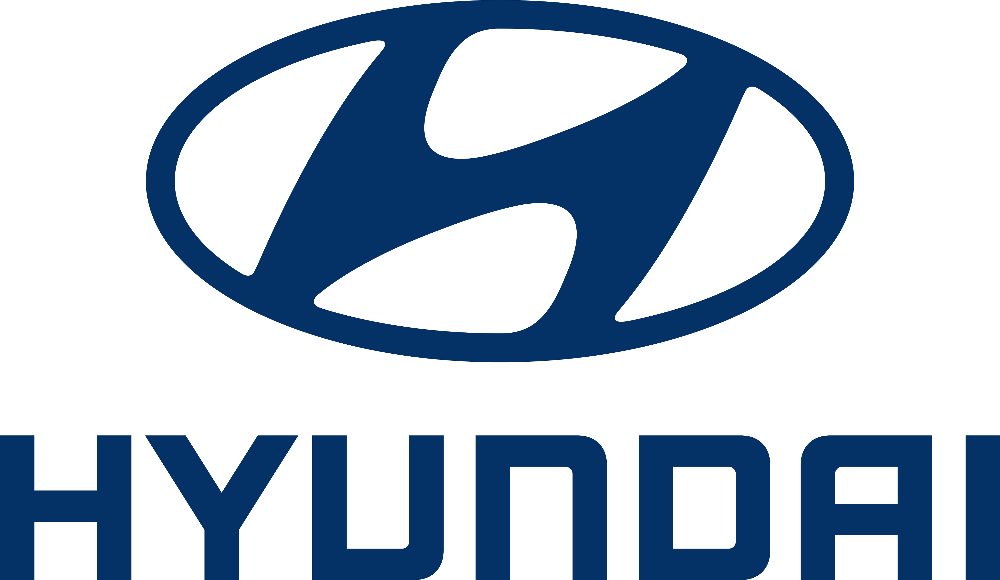

<label>Hyundai Motor Brasil
    Escritório do CEO
    Av. Hyundai, 1000
    São Paulo - SP
    Brasil
    
    04 de julho de 2023
    
    Caros entusiastas da Hyundai,
    
    É com grande alegria que anunciamos uma parceria estratégica empolgante entre a Hyundai Motor Brasil e a Capelcar. Essa colaboração representa um momento importante em nossa busca contínua pela excelência e inovação no mercado automotivo brasileiro.
    
    A Hyundai sempre foi uma marca reconhecida por sua qualidade, design arrojado e tecnologia avançada. Nosso compromisso é oferecer veículos que atendam às necessidades e superem as expectativas de nossos clientes. Agora, com a parceria da Capelcar, estamos entusiasmados em expandir ainda mais nossa presença e proporcionar uma experiência de compra e venda de carros excepcional aos nossos clientes.
    
    A Capelcar é uma empresa respeitada e experiente no mercado de compra e venda de carros, trazendo consigo um profundo conhecimento do mercado automotivo brasileiro. Essa parceria estratégica nos permitirá aproveitar essa expertise para aprimorar nossas operações e fornecer soluções personalizadas e convenientes para nossos clientes.
    
    Estamos empenhados em oferecer veículos de alta qualidade, com tecnologia de ponta e serviços excepcionais. Combinando a visão da Hyundai e a experiência da Capelcar, buscamos criar uma experiência de compra e venda de carros memorável, que vá além das expectativas de nossos clientes em todos os aspectos.
    
    Além disso, compartilhamos o compromisso com a sustentabilidade. Trabalharemos juntos para promover práticas responsáveis e soluções que contribuam para um futuro mais limpo e sustentável. Queremos liderar o caminho em direção à mobilidade elétrica e ser uma referência em veículos eco-friendly.
    
    Agradecemos a todos os envolvidos nesta parceria empolgante. Com a união entre a Hyundai Motor Brasil e a Capelcar, estamos confiantes de que alcançaremos novos patamares de sucesso, continuando a oferecer aos nossos clientes experiências automotivas excepcionais.
    
    Vamos avançar juntos, impulsionados pela nossa paixão pela inovação e determinação em moldar o futuro da mobilidade no Brasil!
    
    Com os melhores cumprimentos,
    
    [Ken Ramirez]</label>